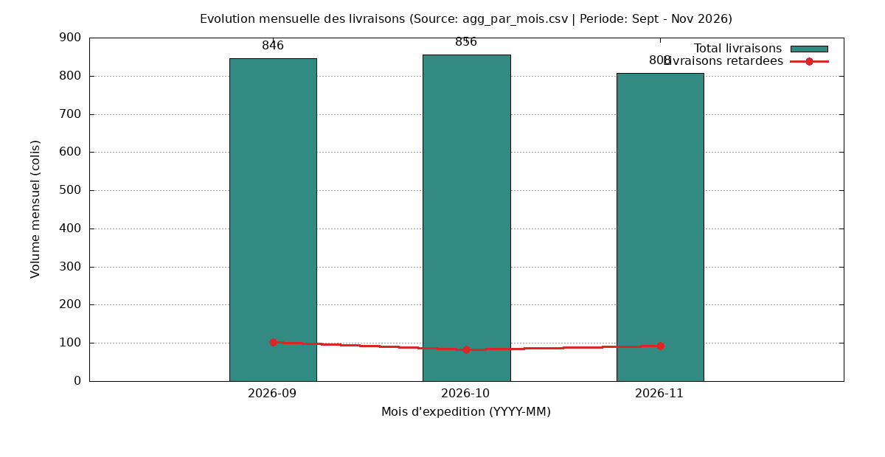
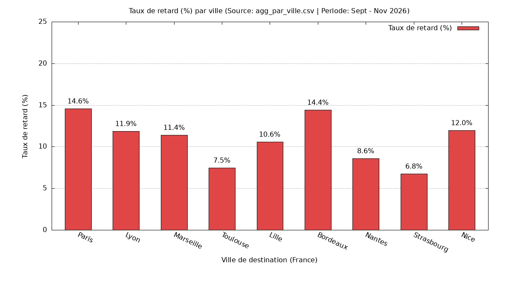
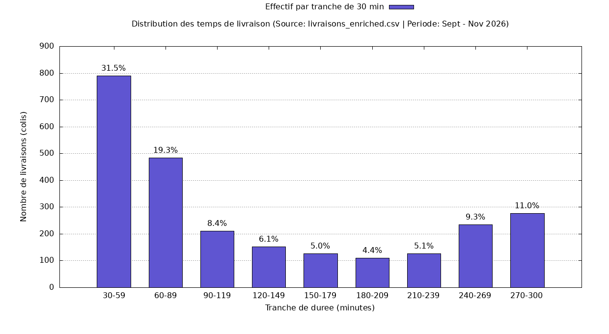
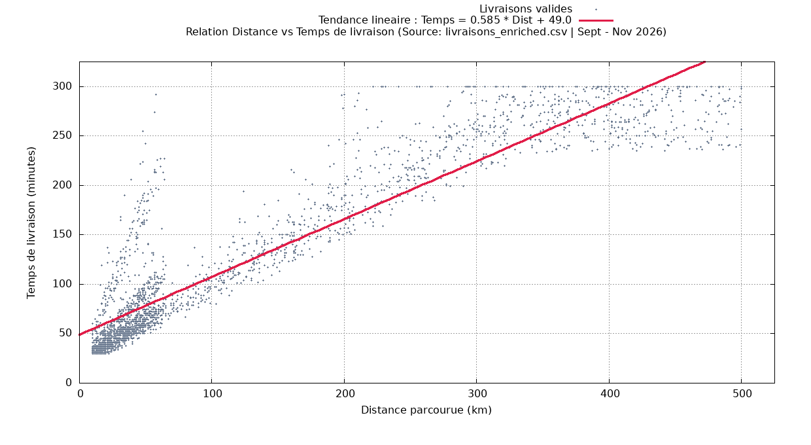
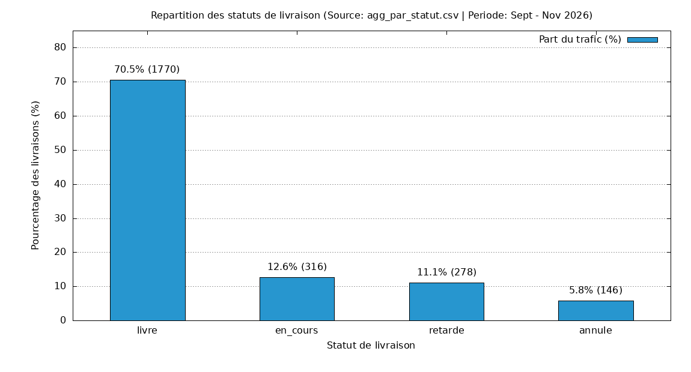
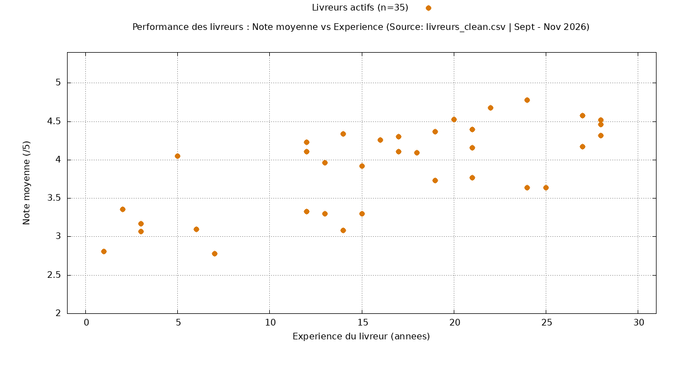
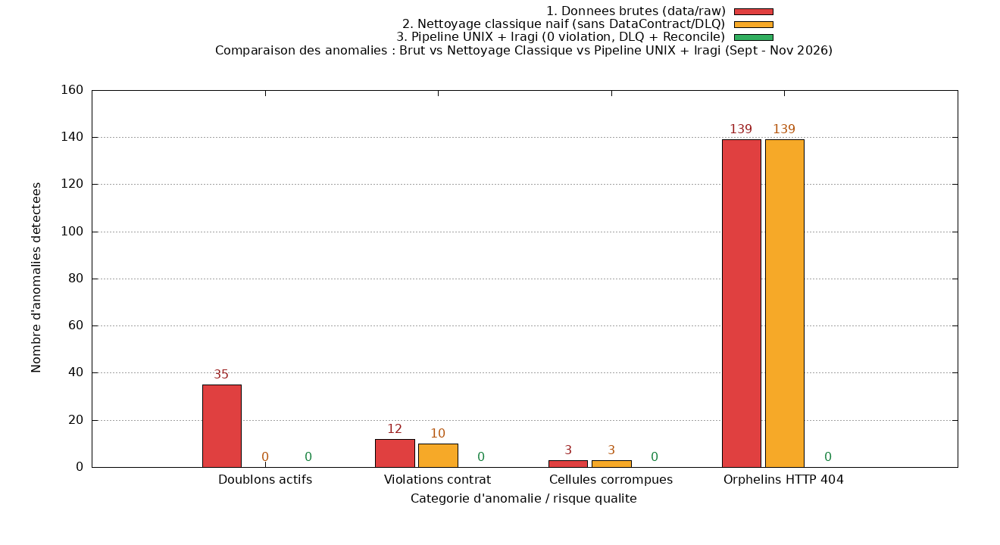

Projet Final Systemes UNIX — M1 Informatique
Analyse Logistique par Pipelines UNIX & Gouvernance Iragi (0.6.4)
Genere le : 2026-11-26 18:06:23 UTC
Score Iragi Avant -> Apres
99.29 -> 99.75 / 100
Gain certifie : +0.46 pt (0 violation restante)
Livraisons Valides
2510 / 2555
35 doublons supprimes, 10 en quarantaine DLQ
Correlation Distance / Temps
r = 0.9296
Distance vs Cout : r = 0.8647
Reconciliation Logs HTTP
751 rapprochees
139 appels 404 orphelins detectes








Synthese par Ville de Destination
| Ville | Volume | Distance moy. | Duree moy. | Cout moy. | Taux de retard |
|---|---|---|---|---|---|
| Paris | 377 | 75.59 km | 90.96 min | 36.67 EUR | 14.59 % |
| Lyon | 320 | 136.42 km | 131.01 min | 45.67 EUR | 11.88 % |
| Marseille | 307 | 157.63 km | 139.18 min | 48.80 EUR | 11.40 % |
| Toulouse | 268 | 142.35 km | 131.46 min | 46.76 EUR | 7.46 % |
| Lille | 265 | 138.65 km | 130.29 min | 46.14 EUR | 10.57 % |
| Bordeaux | 257 | 161.35 km | 144.07 min | 48.89 EUR | 14.40 % |
| Nantes | 245 | 152.21 km | 142.16 min | 47.98 EUR | 8.57 % |
| Strasbourg | 237 | 152.47 km | 137.09 min | 47.15 EUR | 6.75 % |
| Nice | 234 | 132.57 km | 126.53 min | 45.91 EUR | 11.97 % |